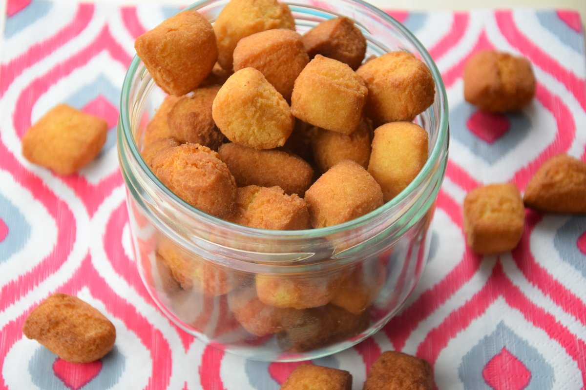

Croquettes

Description
This recipe is flour-based. It is generally served as an aperitif at various receptions in Africa.
Ingredients
- Vegetable oil
- 2 cups flour (500g)
- ½ cup white sugar
- 2 eggs
- 1 cup butter
- 2 milk tablespoons(optional)
- 2 tablespoons ground nutmeg
Steps
-
Combine the flour and sugar in a large bowl and add the ground nutmeg to the flour.
-
Rub the butter over the flour mixture until it mixes well and becomes smooth.
-
Make a hollow in the flour and break the eggs into it, add the milk and mix well with your hands, until you get a dough that is not too sticky.
(If your dough sticks too much to your hands, add a little more flour.)
-
Roll out the dough on a cutting board, then use a knife to cut the dough into small squares.
(You can shape the croquettes as you wish (squares, rectangles, circles, etc...)
-
Heat the vegetable oil until very hot and fry the small croquettes, stirring occasionally to prevent them from sticking together.
(When your patties are nicely golden or light brown, remove them from the heat and place them on a paper towel to absorb the excess oil.)
Let cool and serve.